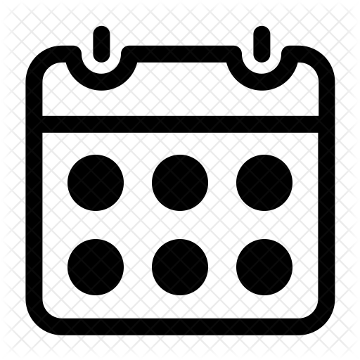

Agenda Budaya
"Semalaman di Dunia Bayangan: Pagelaran Wayang Kulit"
Menampilkan keindahan seni tradisional wayang kulit, yang membawa penonton ke dalam dunia bayangan melalui kisah Epic yang dipentaskan oleh dalang penampil


24 Januari 2024 | 20.00 - 23.00 WIB
Galery Indonesia Kaya
Gratis